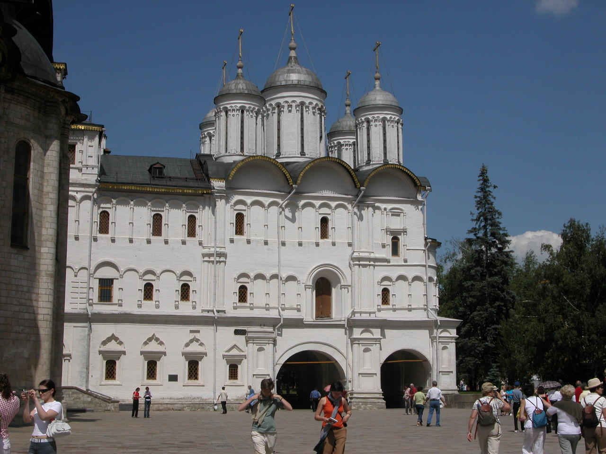

Lundi 19/06/06 9:00 Moscou
Kremlin: Eglise des Douze Apôtres Cette église fut ajoutée au Palais des Patriarches en 1652 par le patriarche Nikon qui trouvait que l'église de la Déposition de la Robe de la Vierge n'était pas assez prestigieuse pour lui.